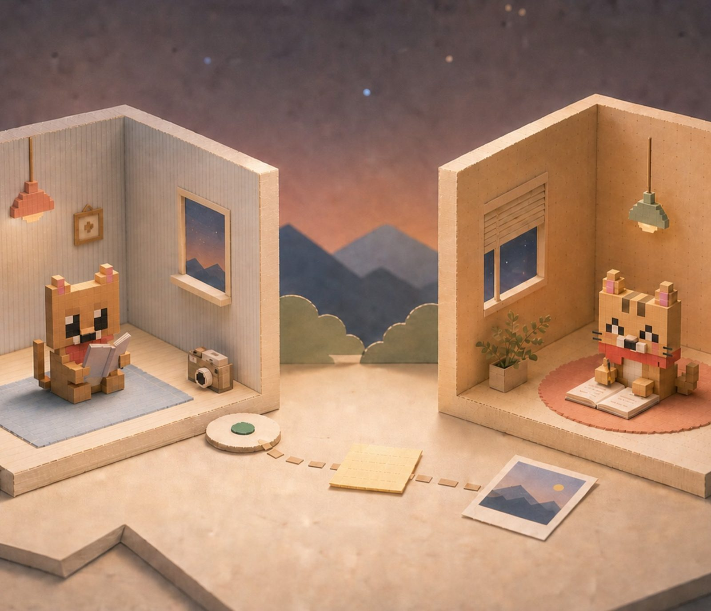
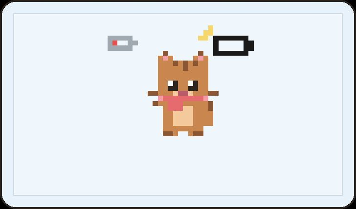

Picto 片刻 · 02 / 03
Picto 片刻 · 02 / 03
看见彼此，
不必一直聊天。
片刻 Picto 是一种介于沉默与即时聊天之间的低打扰陪伴方式：先表达“我现在怎样”，再决定要不要说话。

Problem · 问题
即时通信把“被看见”绑成了“要回复”，忙碌和异地的情侣因此更累。
Approach · 判断
用一张状态卡代替一条消息：心情 + 正在做 + 联系偏好，边界直接说出来。
Outcome · 结果
一套可解释的状态系统、完整的双角色流程和可运行原型。
01 · Problem
问题
情侣想要的是“被想起”，
不是“被要求回复”。
桌面研究里反复出现同一个张力：关系需要持续的在场感，但现有工具把“在场”和“回复义务”绑在一起。
52%伴侣没按预期时间回复时会感到焦虑
67.5%有过异地恋经历
41.3%认为“忽略了联系”是异地恋的阻碍
0在线、已读等制造期待的信号，Picto 一个都不显示
来源：Huang & Yao, 2024, JSPR, N=50；中国青年报社会调查中心, 2016, N=2001。为已发表研究数据，非本项目调研。
02 · Decision
设计原则
三个原则，约束所有功能与表达。
01
看见，不等于打扰。
状态先于消息，让关心可以停在“我知道了”。
02
不回应，也被允许。
联系偏好直接可见，不用让沉默承担解释成本。
03
温柔，但操作必须清楚。
情感留给标题与角色，按钮和反馈直接说明结果。
03 · Design
交互系统
“智能”来自可解释的状态映射。
不是自动替你表达，而是把主动选择的信息，转化为可预测、可感知的状态反馈。
有点累心情 · 10 种+休息充电正在做 · 12 种+看见就好联系偏好 · 4 档=反馈状态，不催促回应

状态由用户主动选择；系统只组合已知输入，不推断情绪。这样每一个反馈都能说出“为什么是这样”，也不会替任何人做决定。
04 · Design
核心流程
从表达，到看见，再到留存。


05 · Iteration
迭代
四次关键迭代，让作品更诚实。


- 角色程序像素角色成为唯一基准，应用、头像与封面共用同一套造型。
- 语言能力不再被夸大：“在线、已送达”改为“当前设备、切换角色查看”。
- 流程分散的页面整合为六步双角色交接，表达、看见、回应、接收形成闭环。
- 展示冗长的过程说明，换成真实界面和可交互的案例页。
06 · Next
下一步
让亲密关系里的“此刻”，先被看见。
下一步计划用一周日记研究验证三个设计假设，并回应低打扰本身的代价：状态不能完全代替主动表达，所以 Picto 保留了短句。